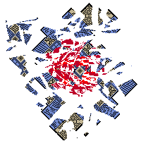
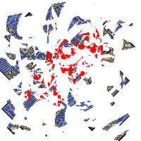
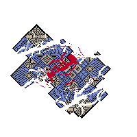
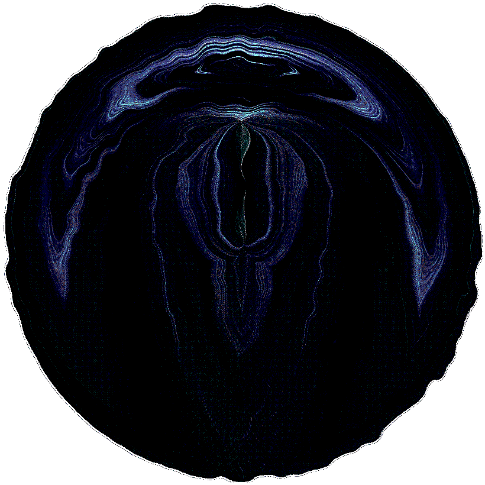
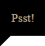

-
-
Ｔｅｒｍｉｎａｌ ２３０ ｉｓ ｏｎｌｉｎｅ．
Ｓｏｌ ｏｎｓｅｔ．．．
-

-
-
Ｐｅｒｃｅｎｔａｇｅ ｏｆ ｔｒａｖｅｒｓａｂｌｅ ｓｐａｃｅ： ？？？
Ｌｏｗ ｃｈａｎｃｅ ｏｆ ａｎｎｉｈｉｌａｔｉｏｎ．
Ｙｅｔ， ｐｒｏｃｅｅｄ ｗｉｔｈ ＣＡＵＴＩＯＮ．
ＣｏＳ ｉｓ ｓｔｉｌｌ ｐｒｅｓｅｎｔ， ｅｖｅｎ ｉｎ ｔｈｉｓ ｄｅａｄ ｓｐａｃｅ．
＂Ａｓｓｉｓｔａｎｃｅ＂ ｉｓ ａｖａｉｌａｂｌｅ ｉｆ ｔｈｅ ｎｅｅｄ ａｒｉｓｅｓ．
Ｃｕｒｒｅｎｔ ｐｒｏｂｅ ｃｌａｓｓｉｆｉｃａｔｉｏｎ： ０３
｜ ｜ ＰＲＯＣＥＥＤ？ ｜ ｜
-
